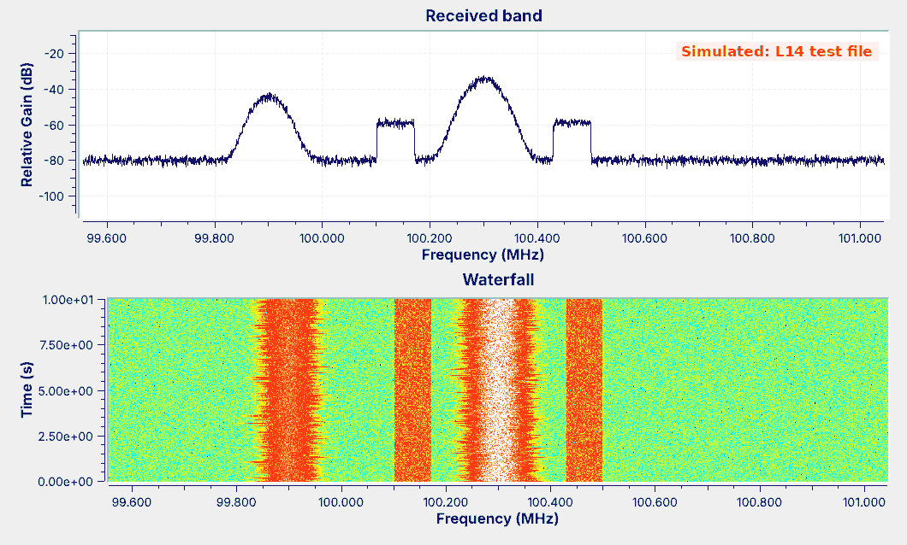
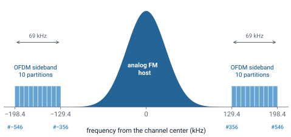
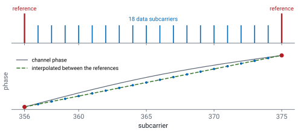
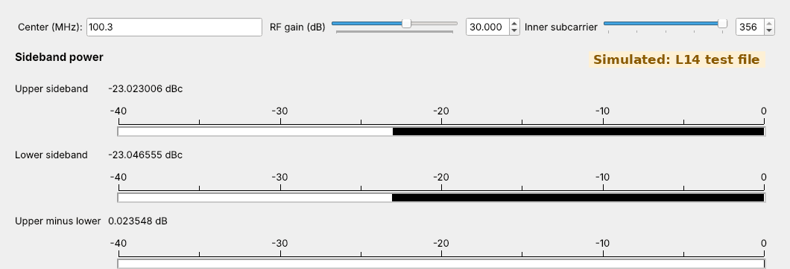
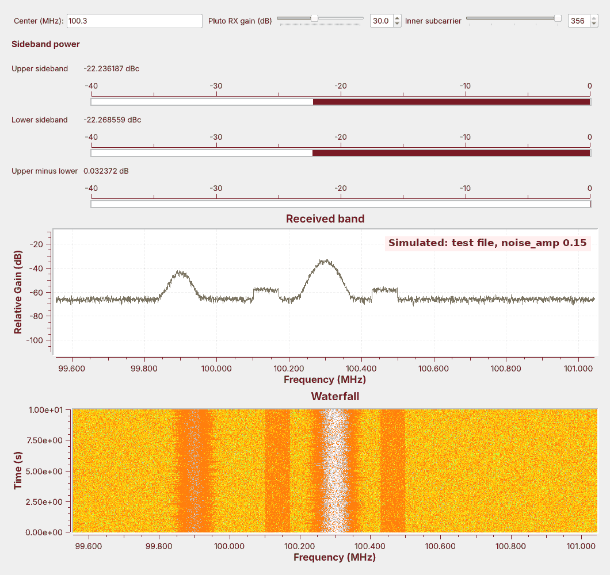
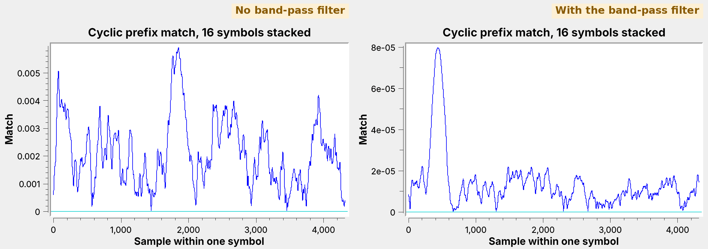
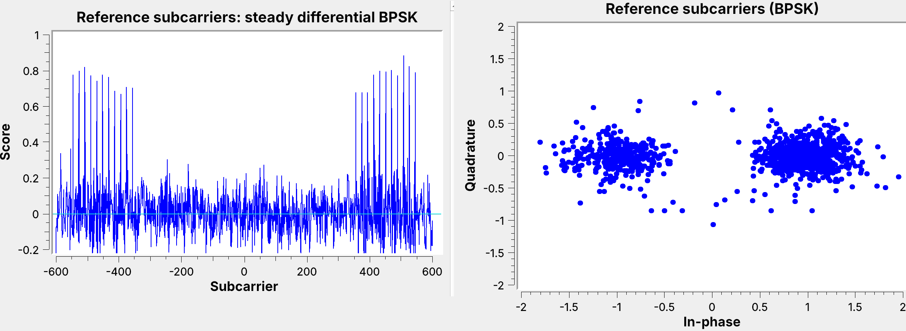
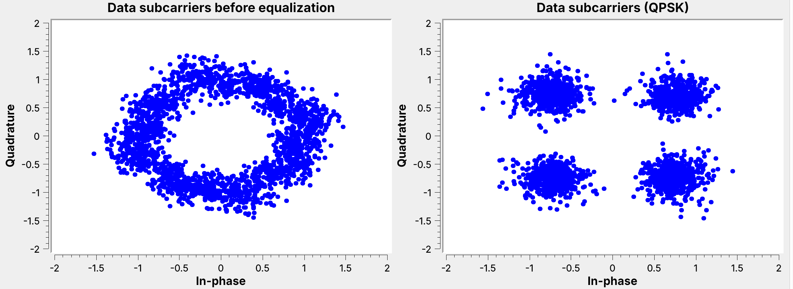
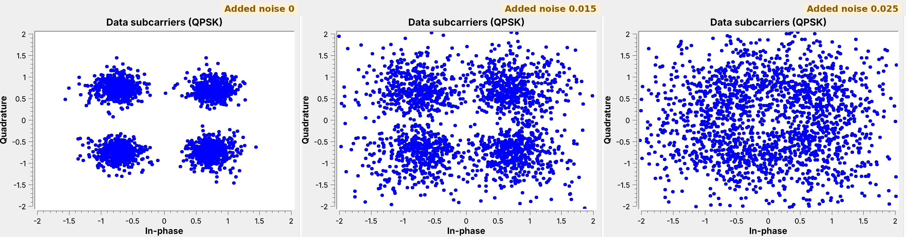

L14 - HD Radio#
HD Radio
We find and measure the digital sidebands beside an FM station, demodulate them to QPSK, and play the station with gr-hdradio.
Lesson 14 · Module 6: Waveform Applications & RF Reverse Engineering · Dr. Neil Rogers
Slides
Learning Objectives
- I can describe how HD Radio works and demodulate an HD Radio signal.
Find the Shelves on the Air

Run
L14-hd-find.grcon the PlutoSDR, centered on a strong FM station.Look for flat bands on either side, and zoom in on one.
We start on the air, with the PlutoSDR and the lesson’s finder flowgraph:
Open
L14-hd-find.grc. Select the File Source and the six blocks after it, through Float To Complex, and press D; then select the PlutoSDR Source and press E.Run it and type a strong local station’s frequency into Center; the station list at hdradio.com shows which local stations carry HD Radio.
Watch the waterfall. The station is a rounded band whose width changes with the audio, and a station with HD Radio also shows two flat bands of constant width on either side of it, which an ordinary FM radio ignores.
Drag a box across one of those bands on the spectrum to zoom in on it, and right-click to zoom back out.
Those bands are HD Radio, a digital broadcast that carries the station’s program, and often extra programs, on the same channel. The course Plutos run in extended-frequency mode, 70 MHz to 6 GHz, so the FM band is in range.
The figure is the finder playing the lesson’s test file rather than an antenna, so it carries a “Simulated” label: the station at 100.3 MHz has the two bands, and the one at 99.9 MHz has none. The rest of the lesson builds that test signal in GNU Radio, explains the finder, and measures the bands. Then we demodulate a recording of a real station one step at a time and play it with gr-hdradio, the course’s HD Radio module for GNU Radio.
HD Radio Modes

A hybrid station keeps the analog FM host and adds a sideband on each side.
Extended hybrid narrows the analog room and widens the sidebands inward.
All digital drops the analog host.
HD Radio carries a station’s program digitally alongside, or in place of, the analog signal. A hybrid station, the layout in the figure, keeps the analog FM signal Lesson 7 received in the center, about 130 kHz wide on each side, where every FM radio still plays it, and puts the digital signal in two sidebands, one on each side, from 129.4 to 198.4 kHz from the channel center. An extended hybrid station limits its analog signal to about 100 kHz each side and adds digital carriers on the inside edge of each sideband, and an all-digital station drops the analog signal entirely. The standard that defines all three is NRSC-5.
The digital signal carries the main program, called HD1, and a station can add HD2, HD3, and more programs that have no analog version.
Part |
Where |
Modulation |
|---|---|---|
Analog host |
within about ±130 kHz |
FM |
Inside the host |
0 to 57 kHz after demodulation |
audio, pilot, stereo DSB-SC, RBDS BPSK |
Digital sidebands |
±129.4 to ±198.4 kHz |
OFDM, QPSK on each subcarrier |
Each part of the spectrum uses a different modulation. The host is analog FM, and Lesson 7’s demodulator turned it into the multiplex: mono audio up to 15 kHz, the 19 kHz stereo pilot, the stereo difference signal as DSB-SC around 38 kHz, and RBDS, the US name for RDS, as differentially encoded BPSK at 1187.5 bits per second on 57 kHz. To see it on the same station, run Lesson 7’s L07-rds-rx.grc. The digital sidebands sit outside the host, where an FM demodulator never sees them, and each one is OFDM, a block of many narrow carriers, each carrying QPSK.
The Digital Sidebands
Each sideband is many narrow subcarriers, 363.4 Hz apart: one FFT bin at
fft_len4096.They come in partitions of 18 data subcarriers and 1 reference.
The sidebands are much weaker than the host.
Each sideband is not one carrier but 191 narrow ones, called subcarriers, spaced 363.4 Hz apart. NRSC-5 numbers them from the channel center, so subcarrier \(k\) sits at \(k \times 363.4\) Hz; the upper sideband runs from subcarrier 356, at 129.4 kHz, to 546, at 198.4 kHz, and the lower sideband is its mirror image. We use those numbers as block settings: the sideband meter later in the lesson takes its band from Variables named inner and outer.
The subcarriers come in frequency partitions of 19: 18 carry data, and one reference subcarrier, at 356, 375, 394, and every 19th after that, carries differentially encoded BPSK that the receiver uses to correct the phase of the data subcarriers around it. Each sideband has 10 partitions, and one more reference at 546 closes its outer edge, so \(10 \times 19 + 1 = 191\) subcarriers, 11 of them references on each side and 22 in all. An extended hybrid station adds partitions inside subcarrier 356. The sidebands are much weaker than the host, so that they do not disturb analog radios or the neighboring stations; the meters in this lesson read each sideband’s power relative to the host, in dBc.

One partition, drawn to show the idea rather than measured: a reference at each edge and 18 data subcarriers between them. The channel’s phase changes slowly from one subcarrier to the next, so a straight line between the two references’ measurements stays close to it for every data subcarrier in between. The receiver uses that line later in the lesson, in Equalizing the Data Subcarriers.
OFDM in GNU Radio
OFDM subcarriers overlap, but each is zero at its neighbors’ centers.
An inverse FFT builds a symbol, and a forward FFT separates the subcarriers again.
A cyclic prefix of
cp_lensamples goes in front of each symbol.
Orthogonal frequency-division multiplexing (OFDM) divides a wide channel among many slow subcarriers instead of one fast carrier. OFDM spaces the subcarriers so closely that their spectra overlap, but each one passes through zero at the center of every other one. That property is orthogonality, the O in OFDM, and it lets the receiver separate them with an FFT. The explorer in the next frame shows it.
Each subcarrier carries one constellation point per OFDM symbol, so a symbol is a list of I/Q points, one per subcarrier: QPSK points on HD Radio’s data subcarriers. GNU Radio’s OFDM Carrier Allocator places the points on the subcarriers we list, an inverse FFT (the FFT block set to Reverse) turns the whole list into one symbol of time samples, and the OFDM Cyclic Prefixer copies the end of each symbol in front of it. That copy is the cyclic prefix, also called the guard interval, and it separates each symbol from the one before it.
For HD Radio at 1,488,375 samples per second, fft_len = 4096 makes each FFT bin exactly one 363.4 Hz subcarrier, and cp_len = 224 samples is NRSC-5’s cyclic prefix. Symbols follow one another over time, each 4096 + 224 = 4320 samples long. The receiver runs the same steps backward: it finds where each symbol starts, removes the prefix, takes a forward FFT, and reads each subcarrier’s point, which the second half of the lesson does on a real station.
OFDM Explorer
Each OFDM symbol is a set of tones that last one FFT length, and the spectrum of a tone that lasts that long is a sinc shape whose nulls fall exactly one subcarrier spacing apart. With the subcarriers at that spacing, every subcarrier’s spectrum crosses zero at the center of every other one, which is the orthogonality of the previous frame.
The left panel shows the spectra of five neighboring subcarriers with the HD Radio spacing; the red dots on the dashed line are what the four neighbors add at the center subcarrier’s frequency. At spacing 1.00 every red dot sits on zero. Move the spacing away from 1.00 and the dots leave zero, and the readout shows the neighbors leaking in. The right panel shows two symbols with their cyclic prefixes, an echo of them, and the receiver’s FFT window. Drag the echo delay past the prefix and the end of symbol 1’s echo enters symbol 2’s window, shown in red.
The Test Signal

Each sideband is random QPSK on 191 subcarriers, built with an inverse FFT.
It writes 4 s as unsigned bytes, nrsc5’s default format, as a SigMF pair: 11.9 MB.
L14-hd-test-tx.grc recreates a hybrid station with the OFDM blocks of the previous frames. For each sideband, random QPSK points fill subcarriers 356 to 546 in the OFDM Carrier Allocator, an inverse FFT of 4096 points turns them into one symbol, and the OFDM Cyclic Prefixer adds the 224-sample cyclic prefix. A Multiply Const sets each sideband’s level, here \(-23\) dBc. The FM host is filtered noise and a 19 kHz pilot, frequency modulated with the broadcast 75 kHz deviation setting, and an analog-only station sits 400 kHz below.
The sidebands carry random symbols, not NRSC-5 data, so nrsc5 cannot decode this file; it is a test signal for finding and measuring the sidebands. It writes the SigMF pair L14-hd-test.sigmf-data and L14-hd-test.sigmf-meta: unsigned 8-bit I and Q at 1,488,375 samples per second, nrsc5’s default input format, which the meta file names as datatype cu8, with the center frequency, 100.3 MHz. GNU Radio’s SigMF Sink takes no 8-bit samples, so a File Sink writes the data file and a Python Snippet, write_meta, writes the meta file when the flowgraph starts. nrsc5 reads any file without a .cs16 or .cf32 ending as cu8, so nrsc5 -r L14-hd-test.sigmf-data 0 reads the data file as it is, though it finds nothing to decode. Nothing in it transmits: its last block is a File Sink.
Finding the Sidebands
![The L14 sideband finder window labeled Simulated: L14 test file: controls for Center, Pluto RX gain, and Inner subcarrier at 356; the number sink reads minus 23.04 dBc for the upper sideband, minus 23.06 dBc for the lower, and 0.02 dB for upper minus lower; the frequency sink shows the host at 100.3 MHz peaking near minus 33 dB, flat shelves near minus 58 dB on both sides, a floor near minus 80 dB, and the analog neighbor at 99.9 MHz; the waterfall shows the shelves as two straight bands of constant width beside the host](../../viz/img/L14-hd-find.png)
The shelves have flat tops and sharp edges, unlike FM.
On the waterfall they are straight bands that never change width.
On the frequency sink, the shelves begin 129.4 kHz from the station, at 100.1706 and 100.4294 MHz, and end at 100.1016 and 100.4984 MHz. Their tops are flat because every subcarrier carries the same power, and their edges are sharp because the subcarriers stop at 356 and 546. The FM host is rounded, and on the waterfall its width changes with the audio, while the shelves stay the same width all the time. That difference is how we recognize HD Radio on a live band: look for two straight, flat bands about 130 to 200 kHz either side of a station.
The shelves sit about 25 dB under the top of the host on the display, but the meters, not the display heights, give the power ratio between the bands: the display shows the power in each 363.4 Hz bin, while each meter adds up every bin across its band.
![GNU Radio Companion with L14-hd-find.grc open: a File Source of bytes, a Throttle, UChar To Float, Add Const minus 127.5, Multiply Const 1/128, Deinterleave, and Float To Complex, and a disabled PlutoSDR Source, both feeding a frequency sink, a waterfall sink, and three Frequency Xlating FFT Filters for the host and the two sidebands, each followed by Complex to Mag squared, a Moving Average, Keep 1 in N, and Log10, with three Subtract blocks feeding a number sink; a disabled Rational Resampler and SigMF Sink hang off the PlutoSDR Source](../../viz/img/L14-grc-find.png)
L14-hd-find.grc plays the test file, any SigMF recording of datatype cu8 at 1,488,375 samples per second, or the PlutoSDR live. A cu8 file stores each sample as two unsigned bytes from 0 to 255, so the first five blocks subtract 127.5, scale by 1/128, and pair the bytes into complex samples. The PlutoSDR Source delivers complex samples directly, so it skips those blocks. To switch to the radio, select the File Source and the six blocks after it, through Float To Complex, press D to disable all seven, and enable the PlutoSDR Source; GRC will not run with both paths enabled. The QT GUI Frequency Sink and Waterfall Sink use an FFT of 4096 points, so each bin is one subcarrier wide.
Measuring Sideband Power

Each meter shifts a band to 0 Hz, filters it, and averages \(\vert x\vert^2\) for 0.2 s.
A sideband meter minus the host meter is dBc; a third reading compares the sides.
A band-power meter is four blocks we have used before. A Frequency Xlating FFT Filter moves the band’s center to 0 Hz and keeps only the band, \(\pm 100\) kHz for the host and \(\pm 34.7\) kHz around \(\pm 163.9\) kHz for each sideband, and decimates by 6. Complex to Mag^2 gives each sample’s power, a Moving Average over 0.2 s averages it, Keep 1 in N slows the result to 50 readings a second, and Log10 with a factor of 10 converts each reading to dB. Subtracting the host’s meter from a sideband’s meter gives that sideband in dBc, and a third Subtract shows the upper sideband minus the lower.
On the test file the meters read \(-23.04\) and \(-23.06\) dBc, the level the test transmitter sets, and the sides differ by 0.02 dB. The same flowgraph on the real station recorded in the nrsc5 project’s sample file reads about \(-24.3\) and \(-23.8\) dBc, close to the test file. On a live station the two meters need not agree, and the lab compares them. The Inner subcarrier slider steps the meters’ inner edge down one partition at a time, from 356 to 280, so the same meters work on an extended hybrid station: slide it down until the readings stop rising.
What Noise Does

Raise
noise_ampin the test transmitter and run the finder again.The floor rises, the shelves sink toward it, and the meters read high.
To watch noise at work, open L14-hd-test-tx.grc, change the Variable noise_amp from 0.03 to 0.15, run it to write a new test file, and run the finder on it. The figure is that run. The floor rises by about 14 dB, the host still stands far above it, and the shelves, which are much weaker, now stand only a few dB above the floor. The meters read about 0.8 dB higher than before, because each one measures all the power in its band and the noise in the band adds to the sideband’s. On a live station the same thing happens as the signal weakens, so a meter reading is trustworthy only while the shelves stand well above the floor.
From Sidebands to Symbols
![GNU Radio Companion with L14-hd-demod.grc open: the File Source, the Throttle, and the five blocks that turn unsigned bytes into complex samples, or a disabled PlutoSDR Source, and a Noise Source, into an Add; an FFT Filter that keeps the sidebands; a QT GUI Frequency Sink; a Delay of fft_len, Multiply Conjugate, Moving Average of cp_len, Stream to Vector, a second Moving Average, and Complex to Mag into a QT GUI Vector Sink; and NRSC-5 Symbol Sync, an FFT, and NRSC-5 Subcarriers into a vector sink, three constellation sinks, and two number sinks](../../viz/img/L14-grc-demod.png)
A band-pass filter keeps only the sidebands.
The cyclic prefix marks where each symbol starts.
An FFT gives the subcarriers, and the block equalizes the data against the references.
L14-hd-demod.grc runs the receiver’s first steps on a real station, one plot per step. Its default recording is the sample capture that ships with the nrsc5 project: 17 s of KUT 90.5 in Austin, in the same cu8 format at 1,488,375 samples per second as the lesson’s test file. The Downloads frame has it and a SigMF meta file for it: unpack sample.xz, rename the result L14-kut.sigmf-data beside L14-kut.sigmf-meta, and run. The same five blocks as the finder’s turn the bytes into complex samples, and the PlutoSDR path is there to run it live.
Most of the chain uses stock blocks, and three of them are new. Multiply Conjugate multiplies its first input by the complex conjugate of its second, Stream to Vector groups a stream into vectors of a set length, and QT GUI Number Sink shows a value as a number and a bar. Two steps have no stock block, so they are Embedded Python Blocks, Lesson 11’s tool for a block one flowgraph needs: NRSC-5 Symbol Sync cuts out each symbol, and NRSC-5 Subcarriers reads the subcarriers after the FFT. Double-click either one to read its code. The next four frames take the plots in order.
Finding Each Symbol

Delay, Multiply Conjugate, and Moving Average compare each sample with the one
fft_lenlater.The match peaks once per 4320-sample symbol, where the symbol starts.
The cyclic prefix is a copy of the last 224 samples of each symbol, placed 4096 samples earlier. A Delay of fft_len and a Multiply Conjugate multiply each sample by the conjugate of the sample 4096 later, and a Moving Average of cp_len adds up 224 of those products. Over the prefix the two samples are copies, the products all point the same way, and the sum grows; everywhere else they point in random directions and cancel. One symbol’s match is noisy, so Stream to Vector cuts the stream into 4320-sample pieces and a second Moving Average averages 16 of them, which leaves one clear peak where each symbol starts.
The band-pass filter in front is necessary because the analog host carries most of the power and has no prefix, so without the filter its products are far larger than the peak. The plot shows only the size of the match. Its angle at the peak is the phase that the radio’s tuning error adds over 4096 samples, so it measures that error to within half a subcarrier, \(\pm 181.7\) Hz. NRSC-5 Symbol Sync does the same matching in Python, reads that angle, and shows the tuning error on the Tuning error within a subcarrier readout; on the KUT capture it reads between about 90 and 100 Hz. NRSC-5 fades each symbol in and out over 224 samples, so instead of dropping the prefix, the block fades it the same way again and adds the symbol’s last 224 samples onto its first 224, which rebuilds one full-strength symbol of 4096 samples for the FFT.

The Delay lines each sample up with the one 4096 samples later. Only over the prefix are the two rows copies of each other, so only there do the 224 products add up, and the match peaks once per symbol.

The same match with the band-pass filter’s taps set to [1.0], which passes everything: the host’s products swamp the prefix, and the tallest peak falls in the wrong place.
Reference Subcarriers

The block compares each subcarrier with its value one symbol earlier.
References give \(+1\) or \(-1\), so 22 spikes mark them.
Their points form two BPSK clusters.
The references carry BPSK with the same differential coding as Lesson 7’s RDS, so the receiver needs only the change from one symbol to the next. NRSC-5 Subcarriers multiplies each FFT output by the conjugate of the same subcarrier one symbol earlier. The channel rotates a subcarrier by nearly the same phase in both symbols, so that phase cancels, and a reference subcarrier lands on \(+1\) or \(-1\). A data subcarrier carries a new QPSK point every symbol, so its product falls at a random angle. NRSC-5 Subcarriers averages how close each product stays to the real axis, and the score plot shows that average for subcarriers \(-600\) to \(600\): 22 spikes stand out, 11 on each side, at every 19th subcarrier from 356 to 546. The constellation shows the references’ points. Most sit at \(+1\), because the references carry slowly changing control data from the transmitter, so most of their bits repeat from one symbol to the next.
A tuning error larger than half a subcarrier moves the whole spike pattern. The block searches 40 subcarriers either way for the pattern, shows the shift on the Whole subcarriers off readout, and corrects it, so the block still finds the references when the PlutoSDR’s center sits 2.5 kHz, about 7 subcarriers, off the station. On the PlutoSDR, change Center by 0.0025 MHz and watch the readout move by about 7 while the plots stay the same.
Equalizing the Data Subcarriers

Before equalization, the channel’s phase smears the data points around a ring.
The two references around each partition measure the channel there.
Dividing each data subcarrier by that measurement leaves QPSK.
Multipath, echoes of the signal off buildings and terrain like the echo in the OFDM Explorer, and the leftover timing error change the channel’s gain and phase from one subcarrier to the next, but slowly. The left plot shows the data subcarriers straight out of the FFT, smeared around a ring by that phase. The two references at the edges of each partition measure the channel well for the 18 data subcarriers between them, as the partition figure under The Digital Sidebands shows. The receiver knows each reference’s value only up to its sign, because its BPSK bit is unknown, so NRSC-5 Subcarriers squares the two measurements, which removes the sign, interpolates between them across the partition, and takes the square root. It divides each data subcarrier by the result and rotates it by 45°, because dividing by a reference on the real axis leaves the data points on the axes, while NRSC-5’s QPSK points sit at 45°. That is equalization: undoing what the channel did, using the reference subcarriers. Each symbol puts 360 points on the right plot, 180 from each sideband, and on the KUT capture they form four tight clusters.
Noise on the Constellation

Raise Added noise: the reference spikes shrink and the QPSK clusters spread.
Near 0.025 the clusters run together.
L14-hd-rx.grcstill plays at 0.035 and falls silent by 0.05.
The Added noise slider adds a Noise Source to the recording, as a weaker station would. Move it up and watch the plots: the spikes shrink toward the floor, and the four clusters grow until they run together near 0.025. L14-hd-rx.grc has the same slider, and its decoder keeps playing past that point: on this recording it plays at 0.035 and is silent by 0.05. The decoder can do that because NRSC-5 adds an error-correcting code before the bits go on the subcarriers: extra bits, computed from the data, that let the decoder find and fix the bits that the noise turned wrong.
Decoding with gr-hdradio
![GNU Radio Companion with L14-hd-rx.grc open: the File Source, the Throttle, and the five blocks that turn unsigned bytes into complex samples, or a disabled PlutoSDR Source, with a Noise Source into an Add, then into an HD Radio Receiver block with eight audio outputs and the message ports status, station, services, id3, files, data, and hdc; two Selectors controlled by a Program chooser pick one program's left and right audio for an Audio Sink at 44.1 kHz; station and id3 go to a Message Debug, and files go to an HD File Sink writing to hd_files](../../viz/img/L14-grc-rx.png)
HD Radio Receiver takes the recording or the PlutoSDR at 1,488,375 S/s.
It outputs each program’s audio, the station and song, and album art.
The Program buttons select HD1, HD2, HD3, or HD4.
After equalization, the receiver still has to undo the error-correcting code, undo the interleaving that spread each block of bits across many symbols and subcarriers so a burst of noise damages only a few bits of each, and decompress the audio. gr-hdradio is an out-of-tree (OOT) module, the kind Lesson 11 built: GNU Radio blocks that call the nrsc5 project’s decoder library. Open L14-hd-rx.grc in the folder with the KUT capture and run it. The receiver takes about 5 s to lock; then HD1 plays, and the console prints the station’s name, its slogan, and the program’s title through a Message Debug block:
((event . station_name) (name . KUT ))
((event . station_slogan) (slogan . The University of Texas at Austin))
((event . id3) ... (title . You're Listening to Q with Jian Ghomeshi) (program . 0))
The receiver decodes all four programs at once, and the two Selector blocks, each of which passes one of its inputs to its output, send the program the Program buttons pick to the Audio Sink. KUT’s capture carries HD1 and HD2. The receiver’s files port sends each file the station transmits, such as album art and logos, to the HD File Sink, which saves them in the hd_files folder; the KUT capture carries none, but most live stations send album art. To decode a live station, disable the File Source and the six blocks after it, enable the PlutoSDR Source, and type the station’s frequency into Center.
Setting Up gr-hdradio
gr-hdradio is not part of radioconda, and neither is nrsc5, which it needs. Install both once, from the radioconda prompt, following the gr-hdradio README:
Download gr-hdradio from github.com/livethisdream/gr-hdradio and open a radioconda prompt in its folder.
Linux or macOS: install the build tools the README lists with
conda install, then runscripts/install_nrsc5.sh, which builds nrsc5 into radioconda.Windows: download the
nrsc5-win64build from the repository’s Actions page and copylibnrsc5.dllwhere the README says.Install the blocks with
cmake -S . -B buildandcmake --install build, using the install prefix the README gives for your system, and restart GRC.
The blocks appear under [HD Radio] in GRC’s block list. If GRC reports that it cannot find libnrsc5, nrsc5 is not installed where Python looks for it; the README lists the places it searches.
Key Point
HD Radio adds two OFDM sidebands, about 23 dB below the host, 129.4 to 198.4 kHz from its center. The prefix marks each symbol, the receiver equalizes the QPSK data against the references, and gr-hdradio decodes the audio.
On the SDR
Run the PlutoSDR at 1,488,375 samples per second, centered on the station.
The finder, the demodulator, and the receiver all switch to the Pluto the same way.
Receiving is unrestricted, and nothing here transmits.
To work live, disable the File Source and the six blocks after it, enable the PlutoSDR Source, and type the station’s frequency into Center; L14-hd-find.grc, L14-hd-demod.grc, and L14-hd-rx.grc all switch the same way. At 1.5 MS/s the Pluto streams continuously, well under the 4 MS/s that Lesson 4 gives for its USB 2.0 link. Centering on the station puts the Pluto’s DC correction on the host, where it does not touch the sidebands or the meters.
The finder sets the Pluto’s gain by hand, from the Pluto RX gain slider, rather than with its automatic gain, so a reading at a given gain means the same thing every time. Start near 30 dB, and lower it if the floor rises or copies of strong stations appear, because the sidebands are far weaker than the host and an overloaded receiver hides them under its own distortion. Not every station carries HD Radio, so check the station list at hdradio.com, and then type its frequency into the finder.
On a weak station the meters read high, as What Noise Does showed. As in Lesson 7, receiving is unrestricted and transmitting is not; nothing in this lesson transmits.
Downloads
L14-hd-test-tx.grc: writes
L14-hd-test.sigmf-dataand.sigmf-meta, 4 s (11.9 MB) of a simulated hybrid station at 100.3 MHz, with an analog-only neighbor 400 kHz below. Run it once; it stops on its own.L14-hd-find.grc: the spectrum, waterfall, and sideband power meters, playing the test file, or any SigMF recording of datatype
cu8at 1,488,375 samples per second, or the PlutoSDR live. Its disabled Rational Resampler and SigMF Sink record the Pluto at half rate for the lab’s optional nrsc5 part.L14-hd-demod.grc: the sidebands, the cyclic prefix match, the reference subcarriers, and the equalized QPSK, from the KUT capture or the PlutoSDR live, with an Added noise slider.
L14-hd-rx.grc: plays HD1 to HD4 with gr-hdradio, prints the station and song, and saves album art to
hd_files, from the KUT capture or the PlutoSDR live. It needs gr-hdradio and nrsc5; see Setting Up gr-hdradio.sample.xz and L14-kut.sigmf-meta: nrsc5’s capture of KUT 90.5, 23 MB, and its SigMF meta file. Unpack
sample.xzwithxz -dor 7-Zip and rename the 50 MB resultL14-kut.sigmf-data, beside the meta file.
Put the flowgraphs and the KUT pair in one folder and run the test transmitter first; GRC runs a flowgraph from its own folder, so the finder finds the test file there, and the demodulator and the receiver find L14-kut.sigmf-data.
What this lesson follows. The topics and their order come from the slides. The hands-on steps follow the pages those slides link and the documentation of the tools:
GNU Radio wiki, Basic OFDM Tutorial: the OFDM Carrier Allocator, FFT, and OFDM Cyclic Prefixer of the test transmitter. The other blocks are in the GNU Radio tutorials, and each block’s wiki page has the same name as the block.
gr-hdradio and its README: the HD Radio Receiver, HD Radio Decoder, and HD File Sink blocks, and how to install them and nrsc5.
nrsc5, the decoder library under gr-hdradio and the source of the KUT sample capture, and NRSC5-DUI, the graphical front end the slides list.
PySDR, RDS, the slides’ activity for decoding RBDS in Python, and gr-rds, the RDS blocks of Lesson 7.
hdradio.com station list, to find local HD Radio stations.
NRSC-5 Layer 1 FM specification, SY_IDD_1011s (PDF): Section 3.5 and Table 5-1 give the spacing and subcarriers.
For more practice, the slides point to the GRCon 2023 CTF challenge “Not Really Superior Clatter-V”, built on an HD Radio signal.
Summary
Part |
What to know |
In GNU Radio |
|---|---|---|
Modes |
hybrid, extended hybrid, all digital |
the shelves on the finder’s waterfall |
Host |
analog FM, about ±130 kHz, with mono, pilot, stereo, RBDS |
Lesson 7’s receiver and gr-rds |
Sidebands |
±129.4 to ±198.4 kHz, subcarriers 356 to 546 |
the meter’s |
Subcarriers |
363.4 Hz apart, partitions of 18 data and 1 reference |
|
Cyclic prefix |
a copy of each symbol’s end |
|
Symbol timing |
the prefix matches its copy |
Delay, Multiply Conjugate, Moving Average |
References |
differential BPSK on every 19th subcarrier, 22 in all |
NRSC-5 Subcarriers’ score and BPSK plots |
Data |
QPSK, which the receiver equalizes against the references |
NRSC-5 Subcarriers’ before and after plots |
Decoder |
audio, station, song, and album art |
gr-hdradio’s HD Radio Receiver and HD File Sink |
Practice
Looking Ahead
The L14 Lab builds a sideband meter, identifies a station’s mode, and measures a live station.
Lesson 15 recovers the carrier phase and symbol timing of a single mPSK carrier.
Today we found the HD Radio sidebands beside an FM station, measured their power with meters built from familiar blocks, built an OFDM signal from GNU Radio’s own blocks, demodulated a real station to QPSK, and played it with gr-hdradio. The L14 Lab is the bench version: build the sideband meter yourself, use it on a capture whose configuration you do not know, and measure a live station on the PlutoSDR, with an optional decode in its last part.
Today the cyclic prefix gave us each symbol’s timing and the reference subcarriers gave us each subcarrier’s phase. A single mPSK carrier has neither, so Lesson 15 recovers its carrier phase and symbol timing from the signal itself, in GNU Radio.